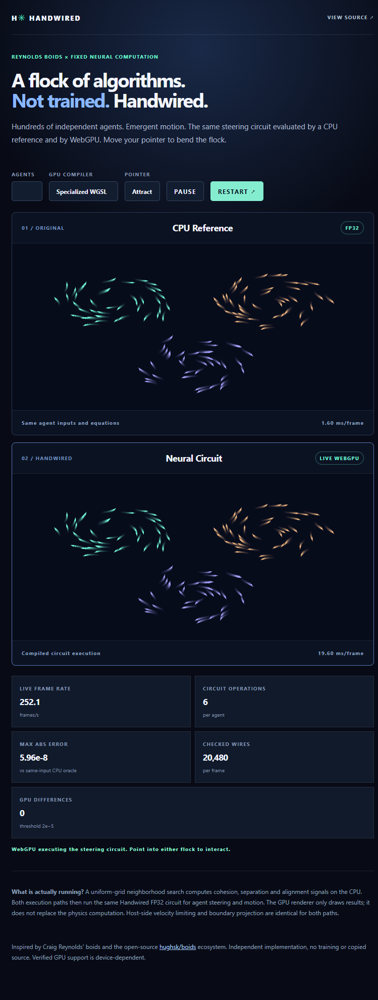
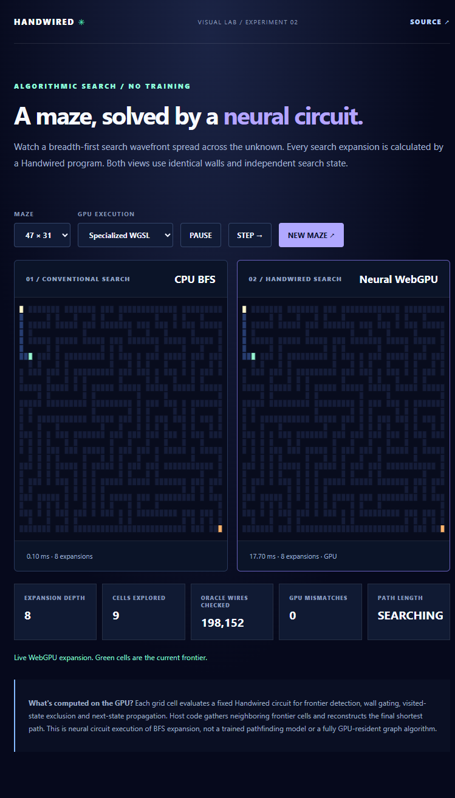
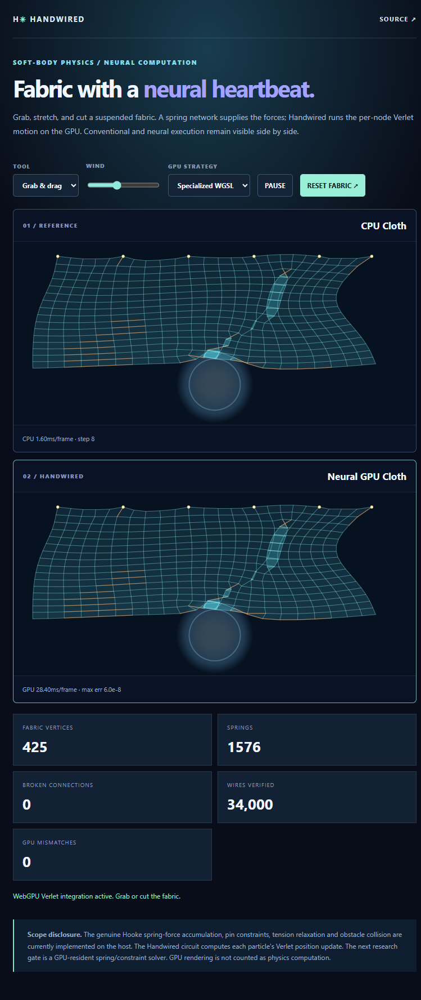
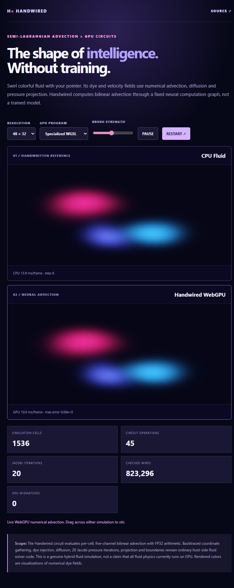

Algorithms that
come alive.
What if you could watch an algorithm run as a fixed neural computation graph? Four simulations. Real GPU execution. Independent CPU oracles. No training required.
Pick your world.

Neural Swarm
Boids that flock, turn and respond to the cursor. Watch emergent organization from fixed rules.

Neural Maze
Watch a fixed neural circuit execute breadth-first search and reconstruct a shortest path.

Neural Cloth
Grab, stretch and tear a mass-spring textile, with Handwired motion and host constraints.

Neural Fluid
Stir luminous dye through a semi-Lagrangian solver with neural advection and pressure projection.
Not a render.
Real computation.
Every experiment ships with a deterministic CPU reference, project-specific tests, a WebGPU circuit execution path, a real browser screenshot and a numeric differential report from Intel UHD Graphics.
We deliberately distinguish CPU-side neighborhood and constraint work from GPU circuit execution. Hardware agreement on the tested adapter does not imply GPU acceleration for every workload.
Inspect the implementation and evidence ↗